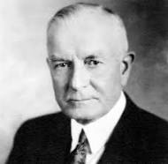

Watson was a pioneer in the development of accounting and computing equipment used today by business, government, science and industry. He built a worldwide industry during his 42 years at IBM. Mr. Watson was born in Campbell, N.Y., February 17, 1874.
| Birth | Death | Occupation |
| 1874 | 1956 | Businessman |